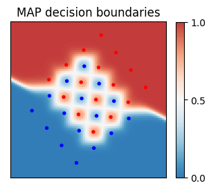
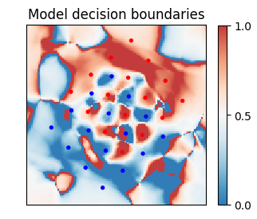

Sep 28th, 2023
In January 2022, Prof. Lizhong Zheng asked me whether I wanted to take up one of his projects in feature extraction. I quickly said yes. The project gave me the opportunity to work in theoretical machine learning and learn about information theoretic approaches and apply them to a real word problem. The purpose of this post is to explain the problem statement, an overview of the method used, challenges I ran into and what I learned.
Prof Lizhong Zheng and Dr. Xiangxiang Xu have been writing extensively on a new method of feature extraction known as an H-score network. They wanted someone to explore how well this architecture did on a particular problem in communication known as the deep fade problem. When multiple users are sending signals over the same channel, there is a non zero probability of the signals to overlap. This condition is known as deep fade, and it is hard to recover the signals back. One of the main reasons for the difficulty is that the optimal decision boundary is highly non linear. This motivated learning the decision boundary using neural networks.
The problem can be formulated as follows: Let \(x_1\) be a BPSK signal and \(x_2\) be a 16-QAM signal. Let \(h_1, h_2 \sim \mathcal{C}\mathcal{N}(0, 1)\) be the channel gain parameters, and let \(z \sim \mathcal{C}\mathcal{N}(0, N_0)\) be white gaussian noise. Then we observe some \[y = h_1 x_1 + h_2 x_2 + z\]
And we would like to best infer \(x_1\) from \(y\). For those of you who aren’t familiar with the communication jargon, this is essentially binary classification:

Now, since we do know the probability distributions of all the random variables, we could just use bayesian inference to infer the value of \(x_1\). This approach is used to generate the theoretically optimal decision boundary. However, this MAP decision boundary is highly sensitive to the values of \(h_1, h_2\) and can not be used in practice. The classical method is to simply take a linear decision boundary, which is given by
\[\Re(h_1^* y) \gtreqless 0\]
In this approach the idea is to approximate the PMI (pointwise mutual information) of the random variables. Thus if we let \(x = (x_1, x_2)\) and \(h = (h_1, h_2)\), we try to find vector functions \(f, g, \bar{f}, \bar{g}\) such that \[\begin{align} \text{PMI}(y; h) &= \sum f_i(y) g_i(h_1, h_2) \\ \text{PMI}(y; x, h) &= \sum f_j(y) g_j(h_1, h_2) + \sum \bar{f}_i(y) \bar{g}_i(h_1, h_2) \end{align}\]
These vector functions are then approximated with deep neural networks. These functions can also be thought of as features of the random variables which relate to sufficient statistics and natural parameterisations.
To fit these functions, we use Prof. Lizhong Zheng’s work. Essentially, he showed that minimizing the mean squared approximation error of \begin{equation} \mathcal{L} = \mathbb{E}\left[\left(\text{PMI}(x; y) - f(x)^T g(y)\right)^2\right] \end{equation} is equivalent to minimizing H-score: \begin{align} \mathcal{H}(f, g) = \frac{1}{2} \text{tr}(\mathbb{E}[{f(x) \cdot f(x)^T}] \cdot \mathbb{E}[g(y) \cdot g(y)^T]) - \text{tr}(\text{cov}(f(x), g(y))) \end{align} Hence our original formulation gives us the natural cost target of minimizing \begin{equation} \hat{f}, \hat{g}, \hat{\bar{f}}, \hat{\bar{g}} = \arg\min \mathcal{H}(f, g) + \mathcal{H}\left(\begin{bmatrix}f \\ \bar{f}\end{bmatrix}, \begin{bmatrix}g \\ \bar{g}\end{bmatrix}\right) \end{equation}
Once we have the well approximated PMI, taking bayesian decisions is quite straightforward. We just follow the math which gives us: \begin{align} p_{\mathsf{x} \mid \mathsf{y}, \mathsf{h}}(x \mid y, h) &= \frac{p_{\mathsf{x}, \mathsf{y}, \mathsf{h}}(x, y, h)}{p_{\mathsf{y}, \mathsf{h}}(y, h)} \\ &= p_x(x) \cdot \frac{p_{\mathsf{x}, \mathsf{y}, \mathsf{h}}(x, y, h)}{p_{\mathsf{x}, \mathsf{h}}(x, h) p_{\mathsf{y}}(y)} \cdot \frac{p_{\mathsf{y}}(y) p_{\mathsf{h}}(h)}{p_{\mathsf{y}, \mathsf{h}}(y, h)} \end{align} where note that the latter two ratios derive from the PMIs. We then take total probability over \(x_2\) and make our decision. Here's the qualitative decision boundary for a particular value of \(h\):
That's basically all the math there is. It took me a while to get comfortable with the underlying theory. A lot of this work is motivated from information theory, and I spent the first two months getting familiar with it. Basically the motivation for writing the PMIs as above is that the probability distribution of \(y, h, x\) can be decomposed into a distribution in \(y, h\) space and an orthogonal component.
Once I was comfortable with the theory, I spent another month working on easier versions of the problem such as single 16-QAM signal detection. During this process, I learned more about pytorch, and I got very comfortable with creating custom modules. Since here we know the exact probability distribution, I learned to just regenerate new batches every epoch. I focused on modularity from the start, and the workflow, including many functions, transferred over when I worked on the full problem.
A particular problem when working on the full problem was that the architecture was underperforming even after extensive training. Overfitting wasn’t a problem as we had access to infinite data. This was solved by simply increasing the depth and expressive power of the neural networks. Another challenge was figuring out the regimes in which we wanted to evaluate our model. I settled on evaluating in regimes in which linear decisions would misclassify a significant portion of signals even without noise. I showed that our architecture misclassified points less often than the linear boundary on unseen data. This accuracy also was seen when I created SNR-BER plots.
Overall this UROP experience was very fulfilling. I learned a lot of skills besides just creating neural networks such as formulating hypotheses about results, writing clean modular code, and clear and effective communication. Currently I am working on writing a paper exhibiting all of my results. We will be releasing it soon, so stay tuned!
Prof. Greg Wornell's 6.7800 [6.437] Inference and Information Theory class was helpful towards understanding the intuition behind H-score networks.